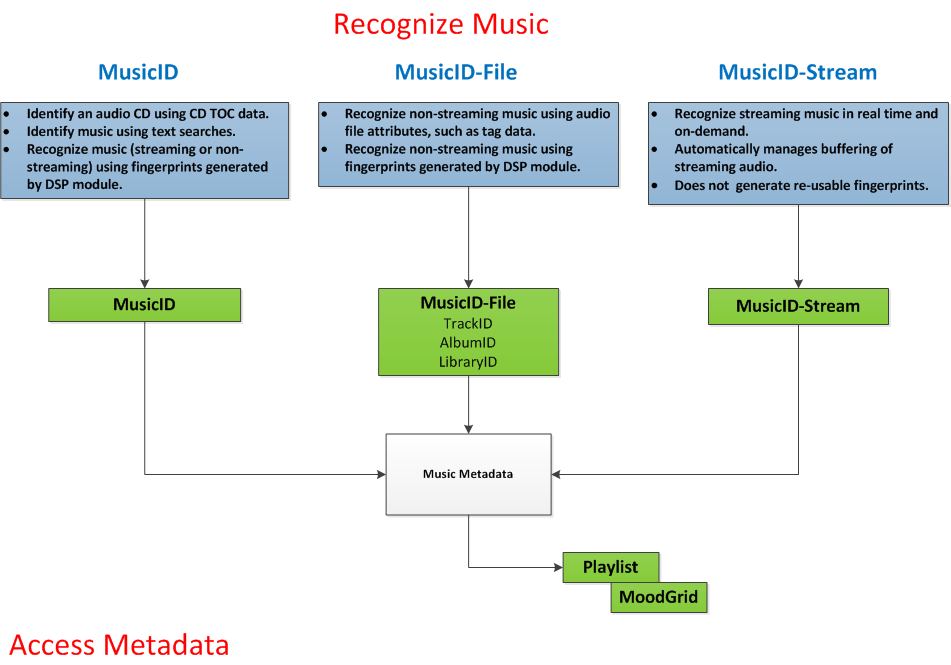

Open topic with navigation
You are here: Concepts > Music Modules > Music Module Overview
Music Modules
The following diagram shows the kinds of identification queries each music module supports.

You are here: Concepts > Music Modules > Music Module Overview
How can we improve this documentation?
Open topic with navigation